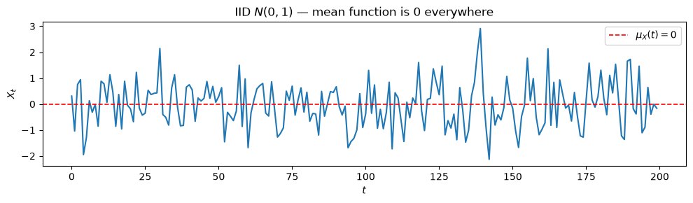
STAT 4170 – Financial Time Series and Forecasting
In Part 1 we emphasized cross-sectional structure:
Now we shift to temporal structure:
Practical reasons:
Our case study for Part 2:
The FX carry trade produces exactly this: a single time series of daily returns. We introduce it now and build tools to analyze it over Modules 3–6.
The carry trade:
Each day you earn or lose money. String those daily returns together and you get a time series \{X_1, X_2, \ldots, X_n\}.
We will ask and answer a bunch of questions regarding this in modules 3–6.
A time series \{X_t\}_{t \in \mathbb{Z}} is a sequence of random variables indexed by time.
At each time point t, the random variable X_t has its own distribution. The draws across time are generally not independent.
We observe a single realization \{x_1, x_2, \ldots, x_n\} — one run of the process.
The challenge of time series analysis: we want to learn about the distribution of \{X_t\} from a single observed path.
Marginal vs. conditional: The distribution of X_t alone is its marginal distribution. The distribution of X_t given past values X_{t-1}, X_{t-2}, \ldots is a conditional distribution.
We will use both.
Let \{X_t\} be a time series with E[X_t^2] < \infty for all t.
The mean function is: \mu_X(t) = E[X_t]
This can depend on t.
X_t \overset{iid}{\sim} N(0,1) for t = 1, \ldots, 200.
This could be a model for investment returns.
What’s the mean function \mu_X(t)?

The mean function is \mu_X(t) = 0 for all t.
A random walk: X_t = X_{t-1} + \varepsilon_t, \varepsilon_t \overset{iid}{\sim} N(0,1).
This could be a model for the log-price or price of something.
What is the mean function \mu_X(t) = E[X_t]?
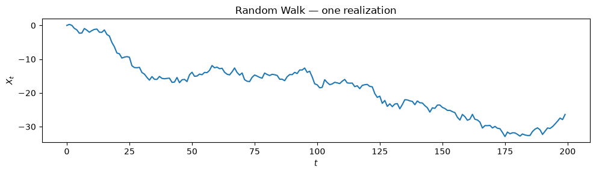
Don’t be duped! Simulate many paths from the same starting point.
The mean function is \mu_X(t) = 0 for all t — the paths fan out, but they average to zero.
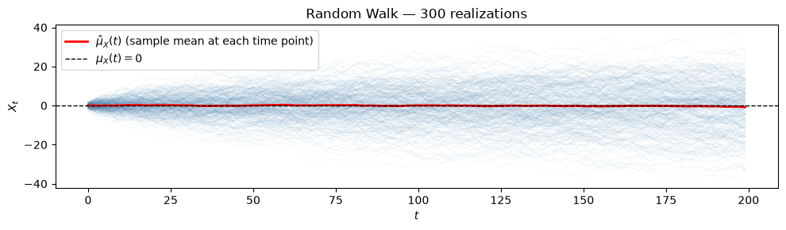
The covariance function captures how two time points co-vary:
\gamma_X(r, s) = \text{Cov}(X_r, X_s) = E\!\left[(X_r - \mu_X(r))(X_s - \mu_X(s))\right]
Same function as previous modules. Instead of two different stocks, it’s two different time points r and s.
If tomorrow’s carry return X_{t+1} is positively correlated with today’s X_t:
The covariance operator is (still) bilinear:
\text{Cov}(aX + bZ,\, Y) = a\,\text{Cov}(X, Y) + b\,\text{Cov}(Z, Y)
\text{Cov}(X,\, aY + bZ) = \text{Cov}(X, Y) a + \text{Cov}(X,Z) b
Bilinearity is (still) the primary tool for calculating anything involving covariances.
\gamma_X(t, t) = E\!\left[(X_t - \mu_X(t))^2\right] = \text{Var}(X_t)
One variance for each t.
What is \text{Var}(X_t) for our IID N(0,1) example?
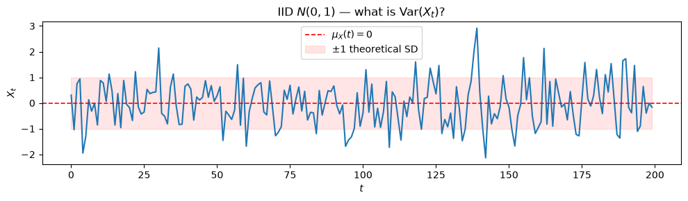
Answer: \text{Var}(X_t) = 1 for all t — constant.
What is \text{Var}(X_t) for the random walk X_t = X_{t-1} + \varepsilon_t?
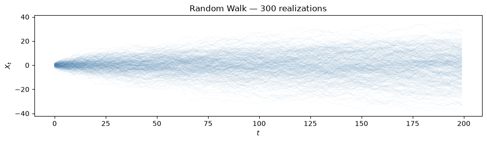
Answer: if X_0 := 0, then \text{Var}(X_t) = t — the variance grows with time.
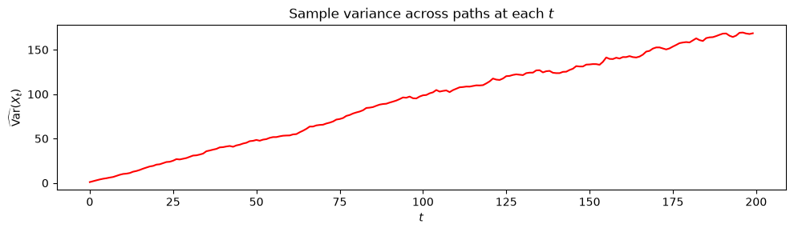
\gamma_X(t, t-1) = \text{Cov}(X_t, X_{t-1})
For X_t \overset{iid}{\sim} N(0,1): independence means \text{Cov}(X_t, X_{t-1}) = 0 for all t.
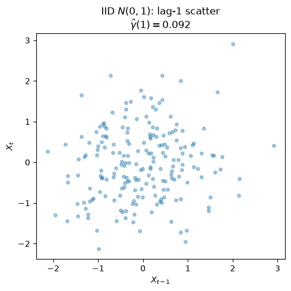
No structure — knowing X_{t-1} tells you nothing about X_t.
For random walk X_t = X_{t-1} + \varepsilon_t:
\text{Cov}(X_t, X_{t-1}) = \text{Cov}(X_{t-1} + \varepsilon_t,\, X_{t-1}) = \text{Var}(X_{t-1}) = t - 1
The lag-1 covariance depends on t — it grows without bound.
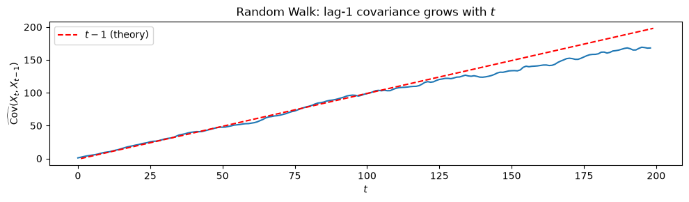
Note that this plot is only available for simulated data from a theoretical model.
With n observations, there are \binom{n}{2} \approx n^2/2 distinct pairwise covariances. For n = 1000 daily returns, that is nearly 500,000 covariances.
In practice, we don’t have many realizations from the same process. We can’t use the same calculations we used on simulated data just now.
Our approach will be to a.) deal only with stationary processes, and then b.) use an alternative estimator that we will describe next module.
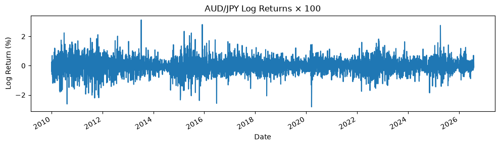
\{X_t\} is strictly stationary if, for any integer h and any collection of time points t_1, \ldots, t_k:
(X_{t_1}, \ldots, X_{t_k}) \overset{d}{=} (X_{t_1 + h}, \ldots, X_{t_k + h})
The joint distribution is unchanged by a time shift.
Intuitively: the process “looks the same” no matter when you start observing it.
E.g. the behavior of this week’s daily returns is distributed exactly the same as next week’s daily returns.
\{X_t\} is weakly stationary if:
The mean is fixed and covariances depend only on the lag, not on where in time you are.
Possible violations:
Strict stationarity with E[X_t^2] < \infty implies weak stationarity — but not vice versa.
A process can be weakly stationary without being strictly stationary: the first two moments behave well (constant mean, lag-only covariance structure), but higher-order features of the joint distribution may still shift over time.
In practice, it’s too difficult to talk about anything besides means, variances and covariances/correlations.
So, from now on, we only focus on weakly stationary models.
We start calling the covariance function an autocovariance function when we know we’re dealing with a stationary process.
Recall for a stationary process, the covariance between X_t and X_{t+h} depends only on the lag h:
\gamma_X(h) = \text{Cov}(X_{t+h}, X_t) = E\!\left[(X_{t+h} - \mu)(X_t - \mu)\right]
This is the autocovariance function (ACVF). “Auto” means “self” — it measures how the series covaries with its own past.
\gamma_X(0) = \text{Cov}(X_t, X_t) = \text{Var}(X_t)
The autocovariance at lag zero is just the (constant) variance of the process.
For a stationary process this is constant across time — and it is the baseline against which we measure all other lags.
We can’t use this for the random walk, but we could use it for the iid model.
The autocorrelation function (ACF) normalizes the ACVF so it is unitless and bounded:
\rho_X(h) = \frac{\gamma_X(h)}{\gamma_X(0)} = \text{Cor}(X_{t+h}, X_t)
Properties: \rho_X(0) = 1, |\rho_X(h)| \leq 1, \rho_X(h) = \rho_X(-h).
The ACF is one of the primary tools for detecting temporal dependence in a time series. We’ll talk about how to estimate it with data soon.
Prices are (pretty much) never stationary.
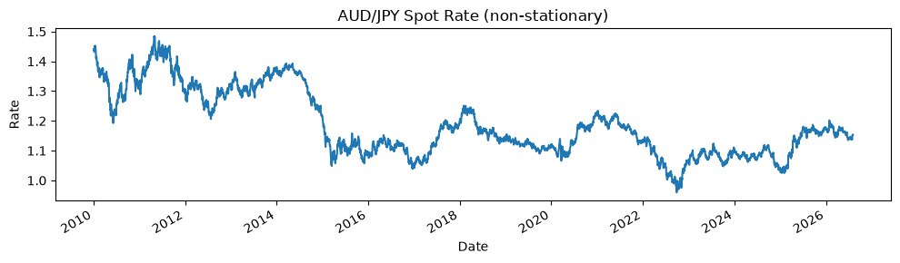
Log returns are usually considered stationary.
r_t = \log\!\left(\frac{P_t}{P_{t-1}}\right) = \log P_t - \log P_{t-1}
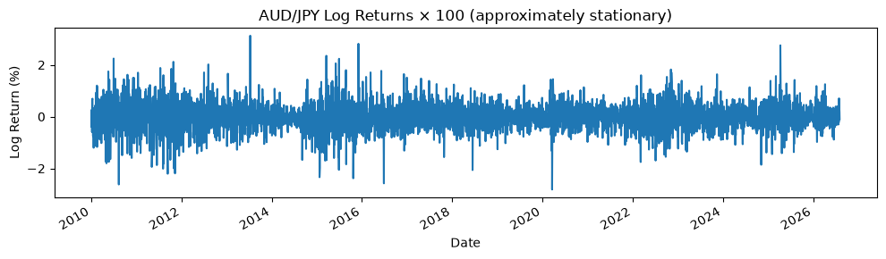
The go-to transformation for prices is first differencing of log prices (i.e., log returns):
r_t = \nabla \log P_t = \log P_t - \log P_{t-1}
For bond yields, sometimes differencing yields is appropriate; sometimes percentage changes are preferred. Context matters.
Key principle: Before fitting any time series model, verify (or at least assume) that your series is stationary. We will revisit this with formal tests in Module 4.
The spot exchange rate S_t is the price at which two currencies can be exchanged right now.
In a currency pair BASE/QUOTE, the rate states how many units of the quote currency buy one unit of the base currency:
\textbf{AUD/JPY}: \quad \underbrace{\text{AUD}}_{\text{base}} \;/\; \underbrace{\text{JPY}}_{\text{quote}} \quad \Longrightarrow \quad S_t = 95 \text{ means } 1 \text{ AUD} = 95 \text{ JPY}
Buying AUD/JPY = buying the base (AUD), selling the quote (JPY).
Selling AUD/JPY = selling the base (AUD), buying the quote (JPY).
To convert AUD → JPY: multiply by S_t. (e.g., AUD 1 × 95 = JPY 95)
To convert JPY → AUD: divide by S_t. (e.g., JPY 9,500 ÷ 95 = AUD 100)
The spot rate changes every second as buyers and sellers trade. When AUD strengthens against JPY, S_t rises; when AUD weakens, S_t falls.
Every country has a short-term risk-free interest rate set (or heavily influenced) by its central bank.
| Country | Central Bank | Recent Rate |
|---|---|---|
| Japan | Bank of Japan (BOJ) | ≈ 0–0.5% |
| Australia | Reserve Bank of Australia (RBA) | ≈ 3–5% |
If you deposit money at rate i, after one year ¥1 becomes ¥(1 + i).
If you borrow money at rate i, after one year you owe ¥(1 + i) per ¥1 borrowed.
These rates differ across countries because of different inflation expectations, growth prospects, and monetary policy stances. That gap is the raw material of the carry trade.
In a brokerage account you execute the carry trade with a single order:
Buy AUD/JPY — buy the base (AUD), sell the quote (JPY).
One standard lot = 100,000 units of the base. At S_t = 95:
| Account balance | Before | After (bought 1 lot) |
|---|---|---|
| AUD | 0 | +100,000 |
| JPY | 0 | −9,500,000 (= 100,000 × 95) |
No separate borrowing step. The broker handles everything automatically.
The broker automatically credits and debits interest on these balances every night.
Each rate has a spread built in:
| Balance | Benchmark | Broker spread | Effective rate |
|---|---|---|---|
| +AUD 100,000 | RBA ≈ 4% | −0.5% | 3.5% earned |
| −¥9,500,000 | BOJ ≈ 0.1% | +0.5% | 0.6% paid |
The two flows are in different currencies, so we need to convert to a common one before netting.
① AUD interest earned (in AUD): \frac{3.5\%}{365} \times \text{AUD }100{,}000 = \frac{0.035}{365} \times 100{,}000 = \text{AUD }9.59\text{/day}
② Convert to JPY at S_t = 95: \text{AUD }9.59 \times 95 = ¥911\text{/day}
③ JPY interest paid (in JPY): \frac{0.6\%}{365} \times ¥9{,}500{,}000 = \frac{0.006}{365} \times 9{,}500{,}000 = ¥156\text{/day}
④ Net credit: ¥911 - ¥156 = ¥755\text{/day}
Or in one step: \dfrac{3.5\% - 0.6\%}{365} \times ¥9{,}500{,}000 \approx ¥755\text{/day}
So far the interest credit of ¥755/day looks like easy money. The catch: the spot rate moves every day too.
Setup: S_t = 95, position = AUD 100,000. Daily interest credit = ¥755.
In the data, the typical daily AUD/JPY move is ±0.53% (1 standard deviation) — about ±¥50,000 on this position, or 66× the daily interest credit.
The good case — AUD/JPY rises from 95 to 96 (+1.05%):
Mark-to-market: AUD 100{,}000 \times (96 - 95) = +¥100{,}000
Plus interest: +¥755
Total daily P&L: +¥100,755
The bad case — AUD/JPY falls from 95 to 94 (−1.05%):
Mark-to-market: AUD 100{,}000 \times (94 - 95) = -¥100{,}000
Plus interest: +¥755
Total daily P&L: −¥99,245
A single ordinary bad day wipes out 133 days of interest income.
Per ¥1 borrowed (Burnside, Eichenbaum & Rebelo 2011), the carry trade payoff is:
z_{t+1} = (1 + i_{\text{AUD},t})\,\frac{S_{t+1}}{S_t} - (1 + i_{\text{JPY},t})
Reading left to right:
Using \log(1+x) \approx x for small rates and writing \Delta s_{t+1} = \log(S_{t+1}/S_t):
z_{t+1} \approx \underbrace{(i_{\text{AUD},t} - i_{\text{JPY},t})}_{\text{carry (predictable)}} + \underbrace{\Delta s_{t+1}}_{\text{spot return (random)}}
The carry component is known at time t — it is the interest rate differential. Small and steady.
The spot return component is unknown at time t — it is the dominant source of day-to-day volatility.
This decomposition is what we compute in our data.
If markets are efficient and investors are risk-neutral, the expected payoff should be zero — otherwise everyone would pile into the trade and the profit would be arbitraged away.
Setting E_t[z_{t+1}] = 0 in the payoff formula:
E_t[\Delta s_{t+1}] = i_{\text{JPY},t} - i_{\text{AUD},t}
This is Uncovered Interest Rate Parity (UIP): the high-yield currency (AUD) is expected to depreciate by exactly the interest rate gap.
In our example: if i_{\text{AUD}} - i_{\text{JPY}} = 3.9\%, UIP predicts AUD should fall ~3.9% against JPY over the year. Expected profit = 0.
UIP is the no-free-lunch benchmark.
Empirically: UIP does not hold. The puzzle has two parts:
High-yield currencies depreciate less than predicted — and sometimes appreciate — leaving carry traders with positive average profits.
Regression evidence (Bilson 1981, Fama 1984): in the regression \Delta s_{t+1} = \alpha + \beta\,(i_{\text{AUD},t} - i_{\text{JPY},t}) + \varepsilon_{t+1} UIP predicts \beta = 1. Empirically \hat\beta < 0 in many samples — the opposite sign.
This is the forward premium puzzle, one of the most replicated anomalies in international finance. It implies carry trades earn positive expected profits, which is why the strategy is so widely used.
Why UIP fails is still debated: risk compensation, peso problems, price pressure, limits to arbitrage. We return to this in Module 6.
import numpy as np
import pandas as pd
fx = pd.read_csv("../data/fx_rates.csv", index_col=0, parse_dates=True)
rates = pd.read_csv("../data/rates.csv", index_col=0, parse_dates=True)
# spot log return (daily %)
spot_ret = np.log(fx["AUDJPY"]).diff().dropna() * 100
# daily carry: annualised rate differential / 252 trading days
aud_rate = rates["AUD_rate"].reindex(spot_ret.index, method="ffill")
jpy_rate = rates["JPY_rate"].reindex(spot_ret.index, method="ffill")
daily_carry = (aud_rate - jpy_rate) / 252
carry_pnl = (spot_ret + daily_carry).rename("carry_pnl")
print(carry_pnl.describe())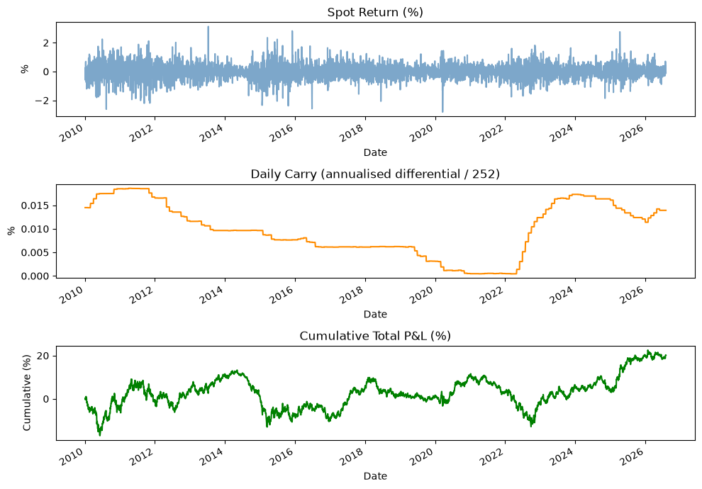
Using the time series tools from Modules 3–6, we will answer:
| Question | Tool | Module |
|---|---|---|
| Is the mean return positive? How uncertain? | Sample mean + inference | 4 |
| Is the return series predictable? | ACF, ARMA models | 4–5 |
| Does volatility cluster? | GARCH models | 6 |
| Can we scale positions to control risk? | Volatility targeting | 6 |
The goal of CS 2 is to go from raw FX data to a complete analysis of the carry trade strategy.
In Module 2 we ran CAPM regressions on returns, not prices. Now we can say precisely why.
Prices are non-stationary — they behave like random walks. When you regress one random walk on another, OLS produces dramatic-looking results even when the two series are completely independent. This is called spurious regression (Granger & Newbold, 1974).
The t-statistic for \hat\beta should asymptotically (i.e. for large data sets) follow N(0,1) under the null of no relationship. But when both variables are random walks, the standard error formula is wrong — residuals inherit long-range dependence from the levels — and the t-stat is wildly overdispersed.
import numpy as np
import matplotlib.pyplot as plt
import statsmodels.api as sm
rng = np.random.default_rng(42)
n, B = 500, 3000
betas, tstats = np.zeros(B), np.zeros(B)
for i in range(B):
y = rng.normal(0, 1, n).cumsum() # independent random walk
x = rng.normal(0, 1, n).cumsum() # another, completely unrelated
res = sm.OLS(y, sm.add_constant(x)).fit()
betas[i] = res.params[1]
tstats[i] = res.tvalues[1]
fig, axes = plt.subplots(1, 2, figsize=(11, 4))
axes[0].hist(betas, bins=60, color="steelblue", alpha=0.75, density=True)
axes[0].axvline(0, color="black", lw=1, ls="--")
axes[0].set_title(r"Distribution of $\hat{\beta}$ — true $\beta = 0$")
axes[0].set_xlabel(r"$\hat{\beta}$")
axes[1].hist(tstats, bins=80, color="firebrick", alpha=0.75, density=True)
xs = np.linspace(-5, 5, 300)
axes[1].plot(xs, 1/np.sqrt(2*np.pi)*np.exp(-xs**2/2),
color="black", lw=1.5, ls="--", label="$N(0,1)$")
axes[1].axvline(-1.96, color="gray", lw=1, ls=":")
axes[1].axvline( 1.96, color="gray", lw=1, ls=":", label="±1.96")
axes[1].set_xlim(-15, 15)
axes[1].set_title(r"$t$-statistic for $\hat{\beta}$ — should be $N(0,1)$")
axes[1].set_xlabel("$t$-statistic")
axes[1].legend(fontsize=9)
frac_sig = np.mean(np.abs(tstats) > 1.96)
plt.suptitle(
f"B = {B} independent random walk pairs, n = {n} each"
f" — {frac_sig:.0%} 'significant' at 5% (should be 5%)"
)
plt.tight_layout()
plt.show()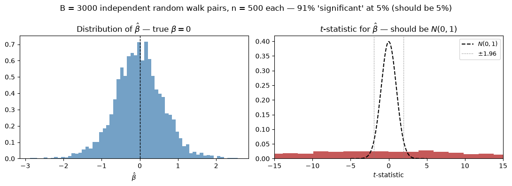
The t-statistic distribution is nothing like N(0,1) — values of \pm 10 are routine, and roughly 60–70% of regressions appear significant at 5% when none of them have any true relationship.
This is not a small-sample curiosity. The problem gets worse as n grows, because longer random walks wander further and the spurious correlation strengthens.
Connecting back to Module 2:
Any time you see a regression with a very high R^2 and very significant coefficients between two financial price series, ask: did the author difference first?
STAT 4170 – Financial Time Series and Forecasting · Module 3